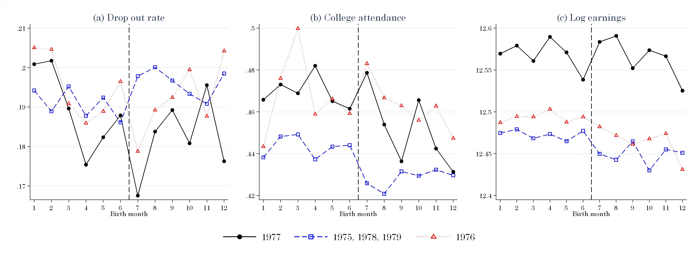
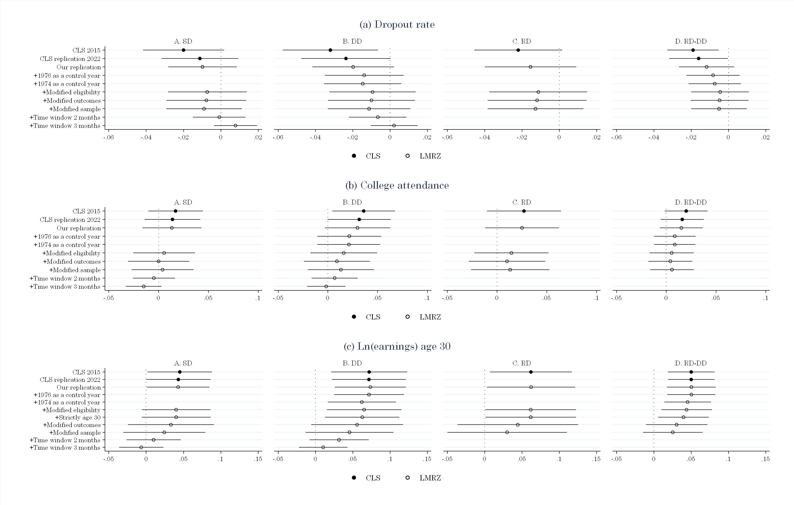

Forskningsnotat · november 2024
Hva skjedde egentlig med foreldrepermisjonen i 1977?
En presis tidslinje for reformen endrer både forskningsdesignet og hvordan de langsiktige effektene bør tolkes.
Kort fortalt
Reformen innførte ikke betalt permisjon fra bunnen av. Den utvidet en eksisterende ordning fra 12 til 18 uker.
Endringen ble satt i verk på ulike tidspunkter i ulike deler av arbeidsmarkedet. Det var derfor ikke ett felles skille i juli 1977.
Når tidslinjen og alternative spesifikasjoner tas på alvor, blir de estimerte langtidseffektene mindre og gjennomgående statistisk usikre.
Bakgrunnen
En mye sitert studie fra 2015 analyserte reformen som om betalt permisjon ble innført 1. juli 1977. Den sammenlignet barn født like før og like etter denne datoen, og rapporterte langsiktige gevinster for blant annet utdanning og inntekt.
Vår gjennomgang av lovverk, tariffavtaler og gjennomføring viser et annet institusjonelt forløp. Betalt permisjon fantes allerede, og utvidelsen til 18 uker ble innført trinnvis: fra januar i staten, fra mai i deler av privat sektor og fra juli for resten.

Hva analysen viser
Når juni og juli sammenlignes direkte, kan vanlige variasjoner mellom fødselsmåneder se ut som et reformbrudd. Resultatene er også følsomme for hvilke kontrollår, tidsvinduer og definisjoner som brukes.
Poenget er ikke at permisjon aldri kan ha langsiktige virkninger. Det er at akkurat denne reformen ikke gir det klare eksperimentelle skillet som den opprinnelige tolkningen forutsetter. Saken illustrerer hvor viktig institusjonskunnskap og robuste spesifikasjoner er i kausale analyser.
